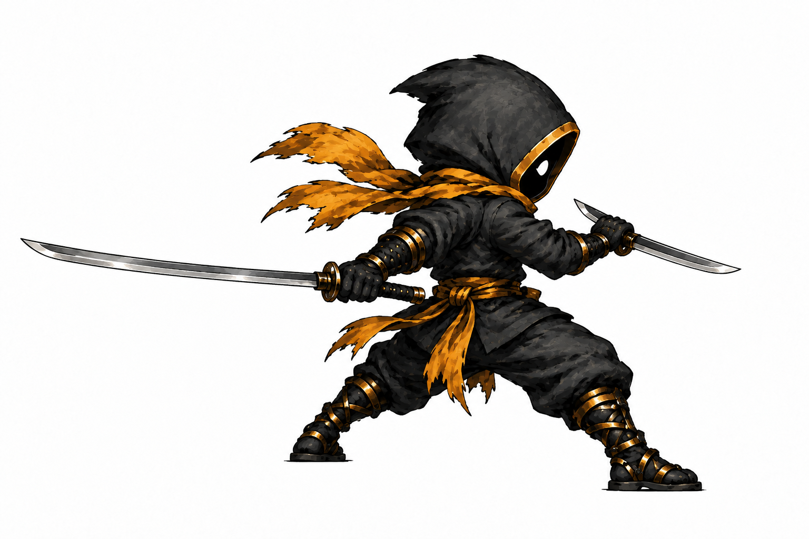

Kael · organic circular frenzy
Research and motion breakdown, before new art. Anthony rejected the simple orbiting-slash preview: it kept the body nearly static and sent every slash in roughly the same direction. That preview was withdrawn. The eight-frame redraw also remains rejected for changing sword hands, body size and limb anatomy. Neither is installed in the game.
The target is a connected sequence of different cuts in different planes. The long katana moves from front to side to behind Kael through an actual turn of his feet, pelvis, ribs and right shoulder. The short blade moves independently through the inside gaps. White trails must be drawn from the measured blade-tip travel after the body poses work.
What has to move
Plant a support foot, pivot through the turn, then transfer weight for the reverse cut. Track the same floor and pelvis height so the fighter does not grow between frames.
Let the torso wind against the pelvis, then unwind. Shoulders carry each upper-arm change; no detached arm rotations.
Right hand = long katana. Left hand = short wakizashi. Every hilt stays inside its glove. Track elbow and wrist positions through the occluded rear poses.
Cross the front, continue behind the body, reverse upward, then cut down another diagonal. Draw rear trails behind the sprite and front trails in front, with direction-specific taper.
Connected action, not repeated circles
First rear-pass key · anatomy test
This single generated pose tests a genuine three-quarter body turn with one blade behind and the shorter blade still in front. It has no slash FX. It is unapproved and not a finished frame: its body is larger than the approved contact pose, and the exact anatomical hand assignment still needs independent visual verification. It will not be packed into the sprite sheet as-is.

These are choreography targets, not claims that a historical school uses this exact game move. The motion spec records the anatomy, reference findings, projection and rejection checks. The machine-readable beat data fixes hand identity and the intended direction of each cut.
Research anchors
- Murase et al., kendo strike biomechanics: foot push, body travel and shoulder motion matter to strike timing.
- Murase et al., eighth-dan motion capture: shinai, both shoulders and the hip are tracked as a changing system.
- All Japan Kendo Federation training videos and The Kendo Show suburi lesson: movement references for cuts and footwork. The video pages were located; playback was not verified in this research pass.
- Musashi's two-sword text: long and short weapons have different reach roles. Kael's frenzy is a stylized adaptation.
Review only · current game sprite, combat data, sound and timing unchanged.